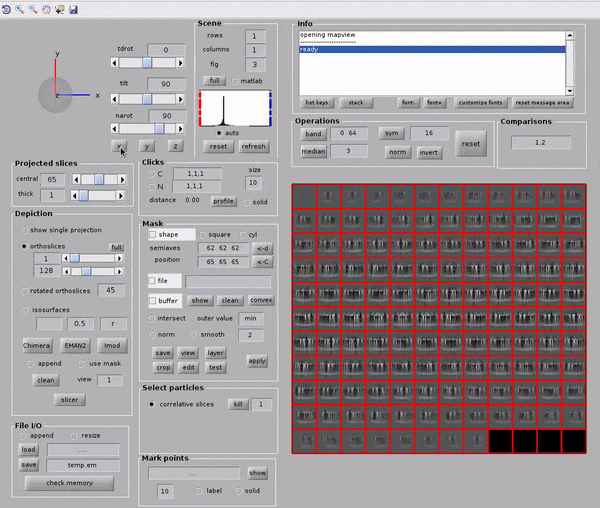
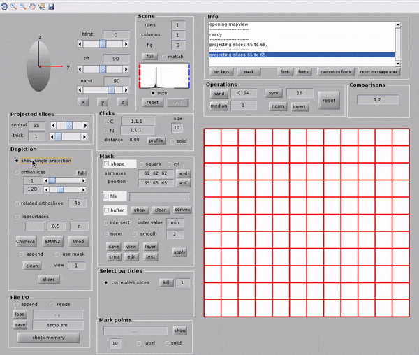
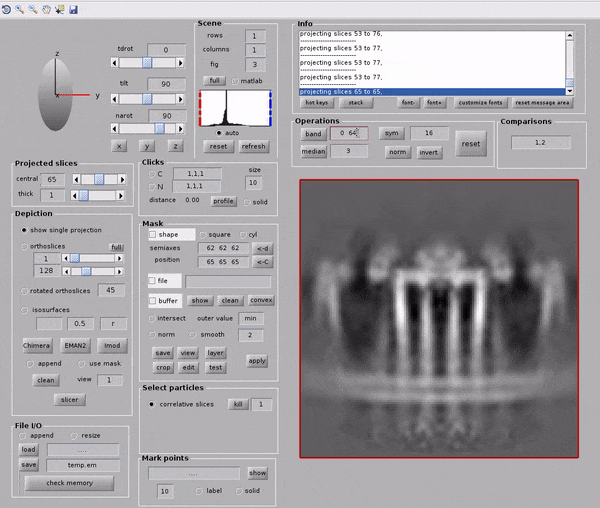
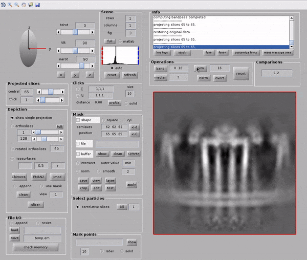
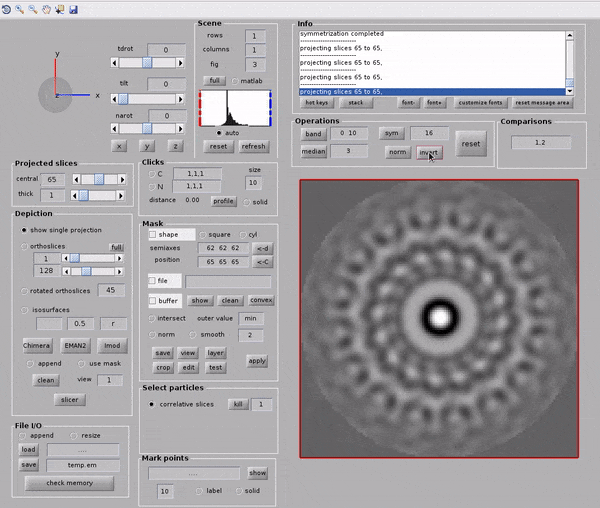
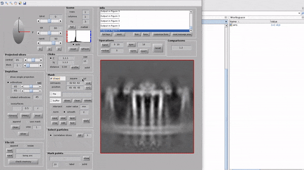
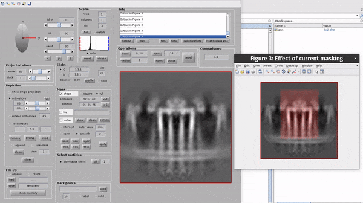
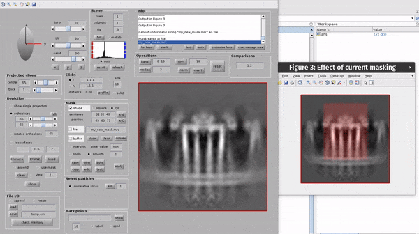

Interactive mask creation¶
Dynamo contains some really useful interactive tools for creating shape masks.
In this mini-tutorial, we will use a legacy version of the dynamo_mapview GUI to create and apply a shaped mask on a reference.
Loading our data into mapview¶
First, we load our volume my_volume.mrc into the GUI with the following command
dpkdev.legacy.dynamo_mapview('my_volume.mrc');
Getting comfortable with the viewer¶
Here we go over some of the controls available in this viewer, you might have noticed there are a lot!
You can switch between viewing x-, y- or z-slices with the x, y and z buttons.

You can switch between viewing either a single projection or a set of slices

Bandpass filters can be applied from the GUI by setting the band parameters then hitting the band button. The filter frequencies are set in Fourier pixels.

Symmetry can be applied from the GUI. Symmetry is applied along the z-axis of the volume.

The volume visualised can be reset to its original state at any time with the reset button.

Mask creation¶
This section covers the basics of mask creation in dpkdev.legacy.dynamo_mapview()
You can create a shaped mask by
selecting the check-box next to the word shape in the
Masksectionselecting either
cylinderorellipsoidsetting the x-, y- and z- radii and centers
hit the layer button to bring up a visualisation of the mask on the currently depicted slices.

You can save a mask by setting a filename in the Mask section and hitting save

You can apply a mask onto a volume and save the volume in the File I/O section
